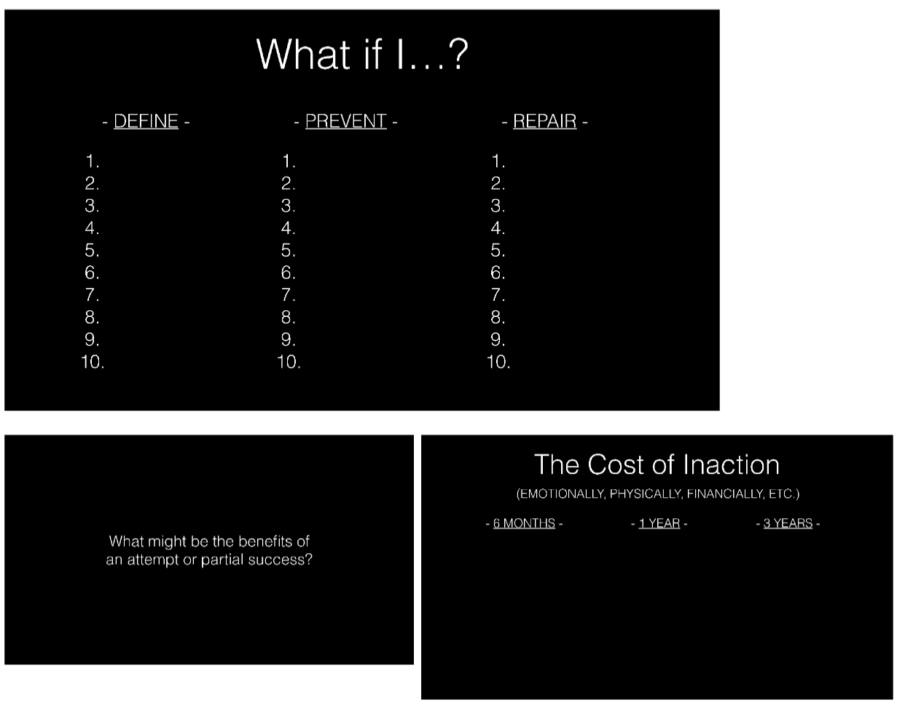

Fear Setting
“Twenty years from now you will be more disappointed by the things that you didn’t do than
by the ones you did do. So throw off the bowlines. Sail away from the safe harbor. Catch
the trade winds in your sails. Explore. Dream. Discover.” Mark Twain
“Doubt kills more dreams than failure ever will.”
“I’ve had a lot of worries in my life, most of which have never happened.” Mark Twain
“We suffer more in imagination than in reality.” Seneca
We believe that Life favors the bold. The reason is that all growth happens in your zone of
uncomfortability. Said another way “We do not grow when we are comfortable.”
Tim Ferris has a genius Ted talk of fear setting you can find a link here:
--- Tim Ferriss: Why you should define your fears instead of your goals
The process that Tim has developed is writing things down:
“If you are nervous about making the jump or simply putting it off out of fear of the unknown, here is your
antidote. Write down your answers, and keep in mind that thinking a lot will not prove as fruitful or as
prolific as simply brain vomiting on the page. Write and do not edit—aim for volume. Spend a few minutes
on each answer.
- Define your nightmare, the absolute worst that could happen if you did what you are considering. What
doubt, fears, and “what-ifs” pop up as you consider the big changes you can—or need—to make?
Envision them in painstaking detail. Would it be the end of your life? What would be the permanent
impact, if any, on a scale of 1–10? Are these things really permanent? How likely do you think it is that
they would actually happen?
- What steps could you take to repair the damage or get things back on the upswing, even if temporarily?
Chances are, it’s easier than you imagine. How could you get things back under control?
- What are the outcomes or benefits, both temporary and permanent, of more probable scenarios? Now
that you’ve defined the nightmare, what are the more probable or definite positive outcomes, whether
internal (confidence, self-esteem, etc.) or external? What would the impact of these more likely outcomes
be on a scale of 1–10? How likely is it that you could produce at least a moderately good outcome? Have
less intelligent people done this before and pulled it off?
- If you were fired from your job today, what would you do to get things under financial control? Imagine
this scenario and run through questions 1–3 above. If you quit your job to test other options, how could
you later get back on the same career track if you absolutely had to?
- What are you putting off out of fear? Usually, what we most fear doing is what we most need to do. That
phone call, that conversation, whatever the action might be—it is fear of unknown outcomes that prevents
us from doing what we need to do. Define the worst case, accept it, and do it. I’ll repeat something you
might consider tattooing on your forehead: What we fear doing most is usually what we most need to do.
As I have heard said, a person’s success in life can usually be measured by the number of uncomfortable
conversations he or she is willing to have. Resolve to do one thing every day that you fear. I got into this
habit by attempting to contact celebrities and famous business people for advice.
- What is it costing you—financially, emotionally, and physically—to postpone action? Don’t only evaluate
the potential downside of action. It is equally important to measure the atrocious cost of inaction. If you
don’t pursue those things that excite you, where will you be in one year, five years, and ten years? How
will you feel having allowed circumstance to impose itself upon you and having allowed ten more years of
your finite life to pass doing what you know will not fulfill you? If you telescope out 10 years and know with
100% certainty that it is a path of disappointment and regret, and if we define risk as “the likelihood of an
irreversible negative outcome,” inaction is the greatest risk of all.
- What are you waiting for? If you cannot answer this without resorting to the previously rejected concept of
good timing, the answer is simple: You’re afraid, just like the rest of the world. Measure the cost of
inaction, realize the unlikelihood and repairability of most missteps, and develop the most important habit
of those who excel and enjoy doing so: action.”

The 2 main takeaways are:
- If you want to live your life to its fullest you have to overcome your fears.
- Overcoming fear is the best path for growth. Learn to embrace discomfort.
Action:Experiment, Write your observations down in your spiral notebook.